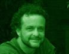
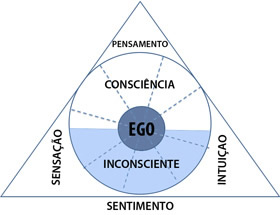

Jung, Sonhos e AutoconsciênciaUm resumo de Magnus Macedo sobre parte da obra de Jung
|
 |
Baseado exclusivamente no trabalho de conclusão de curso de Magnus Cesar de Macedo, aluno da The Society of Analytical Psychology - London - affiliated to the Centre of Psychoanalytical Studies of Essex University, Colchester, Essex U.K.
Tradução de Geraldo J Ballone
Por "psique" entendemos "o conjunto de todos os processos psíquicos, tanto conscientes como inconscientes" (CW vol. 6, página 463). A psique, portanto, é constituída por imagens refletidas e processadas no cérebro. Imagens, sons, emoções, sensações do mundo objetivo são processadas no cérebro de forma claramente demonstrada pela neurociência moderna. Através da ressonância magnética os pesquisadores são capazes de detectar e registrar os movimentos mais "refinados" da energia que ocorre em todo o cérebro. Em nosso mundo moderno a psicanálise e a neurociência caminham de mãos dadas, contribuindo entre si e reciprocamente para as recentes aquisições do conhecimento.
Mas a verdadeira natureza da psique ainda está muito além da compreensão objetiva, mecanicista e reducionista da neurologia, da psicopatologia, psiquiatria e das neurociências em geral. Jung defende a idéia de que as imagens e objetos assumem o caráter de consciência apenas quando têm alguma associação ao ego, caso não se associem ao ego esse material permanece em nível inconsciente. A perda de memória é um exemplo típico deste fenômenos psicológico.
A Consciência
A consciência é um fenômeno diretamente relacionado ao Ego. Para Jung, existem quatro funções da consciência; a sensação e razão, imaginação e entendimento. Ele faz ainda uma comparação do fluxo da consciência com um feixe de luz de uma tocha; tudo o que pertence ao feixe de luz visível se torna consciente, aquilo que está fora do feixe de luz, apesar de tenuamente iluminado, é inconsciente. Assim, tudo o que é visto, ouvido, sentido subliminarmente é armazenado no inconsciente, sem mesmo percebermos.
É importante notar, porém, que as imagens de experiências vividas, apesar de inconscientes, não deixam de existir. O fato de não percebermos claramente esses elementos não significa que eles não estejam lá, eles simplesmente não estão à disposição da consciência.
O material vivencial apreendido pela pessoa pode ter representações que variam desde simples lembranças agradáveis da infância, com intensa e gostosa luminosidade resistente ao tempo, até terríveis experiências traumáticas envolvendo todo tipo de abusos psicológicos e físicos dolorosos terrivelmente fixados em nossas memórias. Essas vivências podem se tornar o que Jung chamou de "complexos psicológicos autônomos".
Normalmente, as experiências traumáticas, pelo fato de serem perturbadoras e desagradáveis, são reprimidas, tanto consciente como inconscientemente, pelos chamados "mecanismos psíquicos de autodefesa". Esses mecanismos, com funções psicológicamente lenitivas, acomodam as experiências emocionalmente dolorosas na profundidade do inconsciente.
Algumas vivências reprimidas jamais voltarão a emergir para a superfície de nossa consciência, portanto, serão praticamente esquecidas na profundidade de nosso mundo mental. Entretanto, é comum essas experiência emocionais se rfevestirem de alguma energia afetiva e, dependendo do nível de energia agregada a esses complexos psíquicos, alguns deles se farão presentes na consciência indefinidamente, independentemente de nossa vontade, de nosso consentimento ou nosso controle consciente.
Dependendo da intensidade das experiências vividas e da quantidade de libido (energia) associada a elas, poderão permanecer ativas por longo período de tempo, às vezes por décadas, às vezes para sempre. Os complexos psíquicos fortemente carregados de energia (libido), mesmo estando reclusos na profundidade do inconsciente, poderão se manifestar sutilmente e indiretamente através de nossas atitudes, de nosso humor, de nossa fala, audição, de visões, sonhos, fantasias, enfim, esses complexos psíquicos poderão “contaminar” toda atitude existencial.
A influência que o material psíquico reprimido exerce na vida da pessoa é, além de inegável, variada de acordo com sua carga energética (libidinal). Os casos de repressões com intensidade libidinal muito forte podem estar relacionados a patologias mentais francas, assim como, inversamente, podem se relacionar apenas a certos desconfortos emocionais, muitas vezes considerados "normais", os complexos psíquicos impregnados por energia mais tênue e fraca.
Jung relacionava os atos falhos, como por exemplo, os pequenos lapsos inexplicáveis de memória, como acontece quando uma pessoa substitui o nome de um amigo por outro, de uma namorada por outra, quando um objeto é exaustivamente procurado apesar de estar bastante visível ou mesmo quando se diz algo chocante, como um deslize da língua ou do vocabulário, sem sentido aparente.
Há numerosos exemplos destas ocorrências cotidianas embaraçantes que nada mais são do que reflexos dos complexos psíquicos presentes na vida de todos nós. Freud chamou alguns destes fenômenos de parapraxis, os quais surgem quando os complexos autônomos do inconsciente explodem em eloqüente disseminação energia na consciência, geralmente através de algum impulso.
Esse fenômeno acontece freqüentemente em escala de grande potência nas crises neuróticas agudas, na exuberante sintomatologia da esquizofrenia, nas manifestações histéricas e estados afins. Jung dizia que a neurose surgia quando “a consciência era inundada por material inconsciente”.
Jung argumenta ainda que o inconsciente deve ser considerado "um órgão natural, com sua energia específica própria e criativa". Ele define o conteúdo do inconsciente da seguinte forma:
- Tudo aquilo que eu sei, mas que não estou pensando no momento.
- Tudo que já me foi uma vez consciente, mas agora está esquecido.
- Tudo o que foi percebido pelos meus sentidos, mas não notado pela minha mente consciente.
- Tudo que involuntariamente sentido, pensado, lembrado e feito sem que tenha prestado atenção.
- Todas as coisas futuras que vão tomando forma em mim e chegarão, em algum tempo, à consciência.
Isso compõe o conteúdos do inconsciente, além de toda repressão mais ou menos intencional de pensamentos e sentimentos dolorosos. Jung atribuiu ao inconsciente também uma função compensatória à consciência. Daí a existência dos sonhos, devaneios e fantasias que a humanidade experimenta desde tempos imemoriáveis.
"Por muitos anos tenho cuidadosamente analisados cerca de 2.000 sonhos por ano, assim eu ter adquirido uma certa experiência neste assunto", escreveu Jung em 1954, quando tinha setenta e nove anos. O conhecimento profundo da alquimia, da mitologia grega, das culturas indígenas, da filosofia clássica e oriental, da psiquiatria tornaram Jung um dos grandes expert em sonhos de nosso tempo. Desse vastíssimo material sobre o assunto pode-se sublinhar alguns conceitos de inestimável valor para o conhecimento da psique humana.
Um sonho é um produto psíquico originário do estado de sono e sem motivação consciente. Em um sonho a consciência não está completamente extinta, há sempre um pequeno fragmento atuante. Na maioria dos sonhos, por exemplo, ainda há a consciência do ego, embora seja um ego muito limitado e distorcido, curiosamente conhecido como o ego onírico. É um mero fragmento ou sombra do ego vigil consciente (CW 8 - P305).
Como acontece no estado de vigília, onde as pessoas reais e as coisas entram em nosso campo de visão, no sonho as imagens são inseridas em outro tipo de realidade que faz parte do campo da consciência do ego onírico. Não nos sentimos como se estivéssemos produzindo conscientemente sonhos, pois eles, além de não estarem sujeitos ao nosso controle, obedecem às suas próprias leis. Os sonhos são, obviamente, complexos psíquicos autônomos que se formam por conta própria e de seu próprio material. Por outro lado, a origem das motivações dos sonhos não é de nosso conhecimento consciente e pode-se dizer que os sonhos vêm diretamente do inconsciente (CW 8 - P305).
A existência de fantasias inconscientemente e não realizadas aumenta a freqüência e a intensidade dos sonhos. Quando essas fantasias se tornam conscientes os sonhos mudam seu caráter e se tornam menos intensos e menos freqüentes. A partir disso podemos concluir que os sonhos muitas vezes contêm fantasias que "desejam" se tornarem conscientes.
Sonhos não enganam, não distorcem, não mentem e nem disfarçam; eles sempre procuram expressar algo que o Ego não compreentende ou nem sabe. Um sonho é um auto-retrato espontâneo e de forma simbólica da realidade e da situação do inconsciente.
Assim como o corpo reage fisiologiamente às agressões, ferimentos, infecções ou qualquer outra condição anormal, as funções psíquicas também reagem à perturbações emocionais perigosas com mecanismos de defesa intencional. Entre as reações defensivas propositais (compensatórias) do inconsciente incluímos os sonhos (CW 8 - P253).
Durante a Primeira Guerra Mundial os soldados sonhavam muito menos com a guerra quando estavam no campo de combate do que quando estavam em suas casas. Os psiquiatras militares consideravam fundamental retirar o soldado das linhas de frente quando ele começava a sonhar muito com as cenas de guerra; - isso significava que o soldado já não possuía defesas psíquicas eficientes contra as solicitações (vivenciais) de fora. (CW 8 - P303)
Assim como a atividade psíquica consciente pode criar mecanismos defensivos, inconscientemente nossa atividade psíquica produz sonhos, fantasias, etc. Um sonho que se nos apresenta não é criado conscientemente, apesar de termos consciência de sua percepção e mesmo reprodução. O sonho continua sendo uma fonte de atividade criativa inconsciente (CW 6 - p485).
"... O inconsciente tem uma função compensatória à consciência, mas especularmos o que o inconsciente é em si, pode ser uma atitude estéril ... Por sua própria natureza, a compreensão do inconsciente vai além de toda nossa cognição e o que conseguimos, apenas, é ter acesso aos produtos do inconsciente, tais como os sonhos e fantasias, mas não temos acesso ao inconsciente em si. Um fato cientificamente comprovado é que os sonhos, por exemplo, quase sempre têm um conteúdo que pode aliviar e corrigir a atitude da consciência. Por isso falamos da função compensatória do inconsciente " (CW 6 - P520).
Para Jung, os instintos e os arquétipos formam o chamado inconsciente coletivo. Coletivo porque, ao contrário do inconsciente pessoal, este tipo de inconsciente não tem características únicas e individuais, mas ocorrência universal, regular e coletiva. Tal como acontece com os instintos, o inconsciente coletivo é um fenômeno comum a toda a humanidade para Jung . Ele defende a idéia de que as imagens do inconsciente coletivo e os arquétipos são a origem e composição dos "grandes sonhos".
Jung atribui aos arquétipos as mesmas qualidades fisiológicas dos instintos, portanto, são fenômenos comuns à toda humanidade. Tal aspecto universal explicaria, para Jung, ter encontrado as mesmas similaridades mitológicas (arquetípicas) nos sonhos de seus pacientes em Basileia, na Suíça, e os aborígines na Austrália. Encontrou ainda as mesmas semelhanças dos sonhos entre os afro-americanos e os europeus arianos, e da mesma forma entre os loucos e os não loucos.
É importante ressaltar que, do ponto de vista junguiano, existem cinco grupos principais de fatores instintivos, a fome, a sexualidade, a criatividade, a atividade e a reflexão, sendo esta última de natureza cultural por excelência (P CW8 114). Jung, ao contrário do filósofo inglês John Locke(1), acreditava que "o homem não nasce como uma tábula rasa", mas com um cérebro que é o resultado do desenvolvimento de uma longa sucessão e cadeia de antepassados (CW 8 p 372).
(1) - O filósofo inglês John Locke (1632-1704), considerado o protagonista do empirismo, detalhou a teoria da Tabula Rasa em seu livro, Ensaio acerca do Entendimento Humano (1690). Para Locke, todas as pessoas nascem sem saber de absolutamente nada, sem impressões alguma, sem conhecimento algum. Então todo o processo do conhecer, do saber e do agir é aprendido pela experiência, depois do nascimento pela tentativa e erro (i.e. o homem nasce como se fosse uma "folha em branco"). Contra esse argumento Jung faz uma comparação: seria como se os passaros, ao nascerem, precisassem cada um aprender por si a tecer seu ninho.
Segundo Jung, "se o inconsciente coletivo não existisse, tudo poderia ser alcançado através da educação; esta poderia reduzir um ser humano a uma máquina psíquica com a impunidade, ou transformá-lo em um ideal" (CW8 P373). Em última análise, oinconsciente coletivo seria um depositário do mundo, da existência humana, estaria inserido na estrutura do cérebro e do sistema nervoso simpático (CW8 P373).
A Unidade “SELF e ALMA”
Por "self" entendemos um conceito empírico, ou seja, “toda a gama de fenômenos psíquicos no ser humano. Ela expressa a unidade da personalidade como um todo” (CW vol. 6, p 460). Por "alma" entendemos “um complexo funcional definido que pode ser mais bem descrito como uma personalidade” (CW vol. 6, p 463). Para Jung, a unidade do Self e Soul representa a razão da nossa própria existência. Esta unidade, ou personalidade, tem características únicas em cada um de nós. Por causa dessa particularidade o nosso inconsciente não age apenas de forma instintiva e coletiva, mas, sobretudo, de forma subjetiva e pessoal.
A descrição de Ego para Jung
Mesmo se o Ego ocupasse o centro da psique, ele não representaria a totalidade do Self. O ego pode ser mais bem descrito como um complexo psíquico com a mesma natureza da consciência. Daí Jung ter falado em "ego-complexo", que seria apenas mais um complexo psíquico entre outros.
O Ego é um complexo que não compreende o ser humano total, uma função que esquece infinitamente mais do que sabe. Não obstante, o Ego tem visto e ouvido infinitamente, mas nunca se tornou plenamente consciente. Há pensamentos completamente formados que surgem fora do alcance da consciência e dos quais o Ego nada sabe. O Ego tem uma vaga noção da incrível e importante função reguladora do sistema nervoso simpático em relação ao processo de equilíbrio interno do corpo. O Ego talvez compreenda uma parte menor do que uma consciência plena teria de compreender (CW Vol.8 p 324).
É evidente que o modelo da psique de Jung não foi baseada apenas no Ego, ou no ego- complexo, mas sobretudo, também em outros complexos. Se tomarmos o diagrama abaixo como base de entendimento da psique humana, percebemos o Ego como parte consciente e parte inconsciente. A mesma localização dupla se aplica para a sensaçãoe para a intuição.
O sentimento, por sua vez, se instala bem no fundo do inconsciente, enquanto opensamento está totalmente consciente. Tal diagrama (figura) gerou inúmeras e acaloradas discussões no mundo psicanalítico ao longo do tempo, muito embora tenha contribuído didaticamente para o estudo e compreensão do assunto complexo como a psique. |
 |
Apesar de ter havido numerosas tentativas, desde nossa pré-história, para classificar e categorizar as diferenças entre os indivíduos, o ser humano nunca conseguiu realmente encontrar uma solução definitiva para este enigma, talvez simplesmente porque não se tratar de um enigma.
Não obstante, através de sua teoria de tipos psicológicos Jung criou um princípio que tem sido aplicado como um ponto de observação em muitas práticas analíticas modernas, mesmo por diferentes escolas de pensamento psicanalítico.
A contribuição dos tipos psicológicos de Jung hoje é reconhecida mundialmente como um dos princípios básicos de classificação psíquica. Esse conceito junguiano tem influência mesmo fora do campo psicanalítico, como é o caso da tipologia de Myers-Briggs, por exemplo, é muito popular na formação em gestão e negócios.
A suposição de que só existe uma psicologia ou apenas um princípio psicológico fundamental ao ser humano é de uma tirania intolerável, é um preconceito pseudocientífico para com o homem comum e sua psicologia. É igualmente intolerável falar de uma "realidade" única. A realidade é, de fato, aquilo vivenciado pela alma humana [...] e mesmo quando a realidade é tratada por um espírito científico, não se deve esquecer que a ciência não é a ‘summa’ da vida, mas apenas uma das formas de pensamento humano (CW vol. 6 p 41).
Emprestado da fisiologia e de Goethe, Jung usou diástole e sístole como bases para desenvolver sua teoria da "Extroversão-Introversão", os tipos básicos de personalidade. Diástole na fisiologia da cardiologia significa o momento em que o coração relaxa e deixa o sangue fluir para dentro dele. Sístole, pelo contrário, é quando os músculos cardíacos se contraem para bombear o sangue para fora dele.
Como o próprio Jung observa, os nomes e os conceitos para descrever o mecanismo da introversão-extroversão podem ter muito sentido para o observador em questão; no entanto, talvez ele tenha preferido esses termos devido o seu fascínio por Goethe, que utilizou a mesma metáfora em sua obra Fausto.
Jung descreveu a si próprio como um "pensador introvertido" com a "intuição" como sua segunda função mais forte. Por outro lado, Goethe poderia ser descrito como o “pensador extrovertido”, tendo também a" intuição "como sua segunda função mais forte.
Extroversão é uma expansão da libido (energia).
No estado extrovertido as pessoas pensam, sentem e agem em função do objeto ... Em certo sentido a extroversão é uma transferência de interesse do sujeito para o objeto ... A extroversão é “ativa” quando intencional e “passiva” quando o objeto contém um interesse subjetivo. Quando a extroversão é habitual na vida da pessoa falamos em um tipo extrovertido (CW vol. 6 p427).
Dependendo da situação que nos encontramos todos nós podemos ser introvertidos ou extrovertidos, embora exista também uma importante condição herdada geneticamente capaz de influir sobre a predominância de um tipo ou outro.
Para Otto Gross o tipo extrovertido representa o gênio "civilizador" e do tipo introvertido o gênio "cultural", a primeira para a realização prática e a última para a invenção abstrata.
Extrovertidos e introvertidos também podem ser subdivididos em quatro subtipos de acordo com as quatro funções psicológicas. Isso acabará resultando em oito tipos categóricos:
1. Extrovertido tipo pensamento,
2. Extrovertido tipo sensação,
3. Extrovertido tipo intuitivo,
4. Extrovertido tipo sentimento,
5. Introvertido tipo pensamento,
6. Introvertido tipo sensação,
7. Introvertido tipo intuitivo,
8. Introvertido tipo sentimento.
Na realidade, estas funções não estão igualmente presentes na vida real, havendo sempre uma predominância de uma delas sobre as demais, as quais ficam em segundo plano, isto é, uma disposição predominantemente emocional não pode também predominantemente pensar racionalmente. Algumas pessoas são guiadas em suas vidas, por seus sentimentos, outros por seu pensamento, outros ainda por sua sensibilidade e, finalmente, outros por sua intuição, independentemente serem extro ou introvertidos. Essas pessoas podem ser extrovertidas ou introvertidas, dependendo do seu ambiente cultural e de formação genética.
Há introvertidos e extrovertidos otimistas, bem como introvertidos e extrovertidos pessimistas. Apesar das classificações não bastarem para explica a psique da pessoa em sua individualidade, uma compreensão dos tipos psicológicos abre o caminho para uma melhor compreensão da psicologia humana em geral (CW 6 p 516).
ALMA: anima, animus, persona, sombra.
Mais clara, talvez, do que qualquer outra ciência, a psicologia demonstra a transição espiritual a partir da idade clássica à moderna. A história da psicologia até ao século XVII consiste essencialmente na enumeração das doutrinas sobre a "alma", mas a "alma" nunca foi capaz de obter uma definição como objeto investigado.Assim, Jung desenvolveu uma teoria caracterizando a alma através de quatro conceitos psicológicos: anima/animus, ego, persona e sombra. Ele chamou esta idéia “Complexos Funcionais” ou de “Personalidade”.
Quando ele fala da alma como "anima", ele se refere ao aspecto feminino dos seres humanos. O homem, apesar de masculino, por exemplo, tem uma alma feminina, ou anima, enquanto a mulher, apesar de feminina, tem uma alma masculina, ou um animus. Se tomarmos a persona de um homem através de seu lado "exterior", ele estará mostrando o seu animus natural para o mundo externo, assim, esperamos que ele tenha a anima na alma.
O motivo é que um lado complementa o outro, diz Jung. A anima geralmente compensa todas as qualidades que faltam na atitude consciente de um homem masculino. Isto explica porque apenas os homens viris estão mais sujeitos à fraquezas e sugestionabilidade características do sexo feminino. Por outro lado, apenas as mulheres mais femininas podem mostrar uma intratabilidade, obstinação e teimosia em sua vida interior comparável apenas às atitude externas masculinas.Estes são traços masculinos que, ao contrário da atitude exterior feminina, mostram qualidades de sua alma, tal como uma alma tipo animus ".
Partindo do ponto de vista junguiano de que a "alma" é o mesmo que "personalidade" ou o mesmo que anima/animus, isso nos levaria a pensar que deve existir uma dissociação da personalidade mesmo diante da normalidade, como se fosse “anjo para o exterior e o diabo em casa”, ou vice-versa, é uma forma de dividir personagem muito comum em nossa experiência cotidiana.
Dependendo da identificação do ego com a situação, e se isso se torna uma atitude habitual, em seguida, o indivíduo desenvolverá uma personalidade dividida, uma parte adaptada à vida doméstica e outra (uma 'persona') para a vida social. Este é um caso comum difundido em nossa sociedade.
Jung define a persona como "... o sistema individual de adaptação para o mundo. Toda vocação, profissão ou papel social, por exemplo, tem a sua própria persona característica. Pode-se dizer, com pouco de exagero, que a persona é aquilo que na realidade não é, mas tanto si mesmo, quanto os outros acham que é" (CW9, n º 221).
Já que temos falado sobre o ego, anima/animus e persona, agora veremos o quarto conceito, o mais complicado deles, o complexo funcional chamado “sombra”. A sombra, no entender de Jung, é a obscuridade, a peça de origem coletiva da personalidade inconsciente, misteriosa e nebulosa. "A sombra é aquilo que a pessoa deseja não ser" (Para CW16 470).
A sombra compreende todo o aspecto histórico do inconsciente, compõe-se de sentimentos ocultos, reprimidos em sua maior parte, complexo de culpa e de inferioridade, cujas origens remontam ao reino animal do qual fazemos e fazia parte nossos ancestrais... Acreditava-se que a sombra do ser humano era a fonte natural de todo o mal, porém, através da investigação do inconsciente humano, sabe-se agora que sua sombra, não é constituída apenas de tendências moralmente condenáveis, mas também de uma série de boas qualidades, como por exemplo, os instintos normais, as reações adequadas à sobrevivência, a compreensão realista, impulsos criativos, etc. (CW 9 parágrafos 422 e 423).
Em sua última definição Jung observa que a sombra é também a sede da criatividade, racionalidade, força e outras boas qualidades da psique humana. Mas os maus aspectos da sombra realmente podem ser esmagadores. O fisiológico caráter egoísta deste aspecto de nossa personalidade é preocupante. É assim que uma pessoa tende a projetar seus próprios aspectos negativos sobre as outras. Devemos perceber que, em geral, todas as más qualidades que nos constatamos nos outros vem, de fato, de nós mesmos. É fácil atribuir aos projetos alheios alguns defeitos que justificam nossa intolerância.
Geralmente nós acusamos nosso inimigo de nossa própria falhas. A psicologia da guerra fez isso de forma bem clara: “tudo que meu país faz é bom, tudo o que os outros países fazem é mau." Como os indivíduos têm esse tipo de psicologia primitiva, toda tentativa de trazer tais projeções antigas para a consciência é tida como irritante. Naturalmente gostaríamos de ter melhores relações com os companheiros, mas apenas na condição deles viverem tal como nossas expectativas, em outras palavras, que os outros estejam dispostos à nossas expectativas" (CW 8 p 271).
Assim, é bastante clara a razão de tantos conflitos e atrocidades em todo o mundo ao longo da história da humanidade. O mal também é parte da formação da natureza psíquica do ser humano. Jung acreditava que só através do autoconhecimento o homem seria capaz de minimizar ou, talvez, acabar finalmente com os conflitos causados pelos instintos primitivos.
“Hoje precisamos da psicologia por razões que envolvem a nossa própria existência.Ficamos perplexos e estupefatos diante dos fenômenos do nazismo e do bolchevismo, porque não sabemos nada sobre ser humano ou, ao menos, temos apenas uma imagem parcial e distorcida dele. Se tivéssemos autoconhecimento este não seria o caso. Estamos face a face com a terrível questão do mal e nem sequer sabemos que está diante de nós, muito menos o que fazer contra ele” (Memories dreams reflections, p 363).
Jung acreditava que tocar o mal levava ao risco de sucumbir a ele e não devemos sucumbir nem ao bem, nem ao mau. Sucumbir ao que crie uma unilateralidade é uma espécie de vício que também não faz uma personalidade saudável. “O mal tem que ser ponderado, tanto quanto o bem, afinal, o bem e o mal não são extensões de um ideal e de fazer abstrações, ambos pertencem ao ‘claro-escuro’ da vida ... em última instância, não há nenhum bem que não possa produzir o mal e nenhum mal que não possa produzir o bem" (CW 12, p 31).
O perigo que ameaça a todos nós vem da psique do indivíduo e da massa coletiva, não da natureza ... "Se certas pessoas perdem a cabeça hoje em dia, pode resultar em uma bomba de hidrogênio" (Memories dreams reflections, p 154). Por isso o autoconhecimento é crucial para a sobrevivência e desenvolvimento psicológico da humanidade. E a este processo de autoconhecimento Jung chamou de "individuação".
Individuação
A individuação é um processo natural que ocorre a todos nós em um determinado período de nossas vidas. Normalmente acontece entre meados dos trinta e o final dos quarenta anos. É o momento em que o indivíduo começa lentamente deixar de ser uma auto comunal para se tornar um indivíduo com afirmações próprias e opiniões próprias sobre as coisas.
A partir daí ele já não é tão influenciado pelo comportamento da massa, mas, ao invés disso, desenvolve suas próprias características de atitudes diante da vida. Mesmo assim, a maioria de nós nunca será capaz de dissociar completamente do comportamento da massa e do pensamento coletivo, portanto, o processo deindividuação é crucial para nos diferenciarmos. Nós, seres humanos, somos animais sociais por natureza e, naturalmente, nos influenciamos mutuamente de várias e distintas maneiras.
O processo de individuação retorna o ser humano ao seu interior, ao seu mundo subjetivo, que certamente estará cheio de novas descobertas e realizações de seu próprio eu. Poderia ser chamado de "maturidade da alma humana”, quando a morte parece mais à vista e questões existenciais, inevitavelmente, começam a surgir. "O significado é então tudo o que procura”.
Assim, o processo de individuação é crucial para o desenvolvimento da humanidade. Se as populações foram compostas de equilíbrio, de indivíduos com psique saudável, muitos problemas poderiam ter sido evitados em nosso mundo atual.
Para resumir de maneira minimalista o vasto material que Jung escreveu sobre a psique: o autoconhecimento da própria psique representaria uma transformação coletiva positiva que poderia poupar a humanidade de uma parte significativa de sofrimento e desespero.
Um homem deve ser capaz de conhecer sua própria capacidade de fazer o bem e o mal ... E como Jung afirmou em 1906, o ser humano moderno é rico em conhecimento, mas pobre em sabedoria ...Parece que o mundo não mudou muito desde então.
Magnus Cesar de Macedo
Bibliography:
Jung, C.G. - Collected Works 5, Symbols of Transformation, Bollingen series XX – Princeton University Press, NJ US
Jung, C.G. – Collected Works 6, Psychological Types, Bollingen
Series XX – Princeton University Press, NJ US
Jung, C.G. – Collected Works 8, Structure and Dynamics of the Psyche, Bollingen Series XX – Princeton University Press, NJ US
Jung, C.G. – Collected Works 9, Archetypes and The Collective Unconscious, Part I, Bolllingen Series XX – Princeton University Press, NJ US
Jung, C.G. – Collected Works 12, Psychology and Alchemy, Routledge Edition, England UK
Jung, C.G. – Dreams, Routledge Classics, London and New York editions 2002. England UK
Jung, C.G. – Memories, Dream, Reflections – Fontana Press
London, UK
Trecho da página de PsiqWeb, Carl Gustav Jung.
Obstáculos ao Crescimento
A Individuação nem sempre é uma tarefa fácil e agradável. O Ego precisa ser forte o suficiente para suportar mudanças tremendas, para ser virado pelo avesso no processo de Individuação.
Poderíamos dizer que todo o mundo está num processo de Individuação, no entanto, as pessoas não o sabem, esta é a única diferença. A Individuação não é de modo algum uma coisa rara ou um luxo de poucos, mas aqueles que sabem que passam pelo processo são considerados afortunados. Desde que suficientemente conscientes, eles tiram algum proveito de tal processo.
A dificuldade deste processo é peculiar porque constitui um empreendimento totalmente individual, levado a cabo face à rejeição ou, na melhor das hipóteses, indiferença dos outros. Jung escreve que a natureza não se preocupa com nada que diga respeito a um nível mais elevado de consciência, muito pelo contrário. Logo, a sociedade não valoriza em demasia essas proezas da psique e seus prêmios são sempre dados a realizações e não à personalidade. Esta última será, na maioria das vezes, recompensada postumamente.
Cada estágio, no processo de Individuação, é acompanhado de dificuldades. Primeiramente, há o perigo da identificação com a Persona. Aqueles que se identificam com a Persona podem tentar tornar-se perfeitos demais, incapazes de aceitar seus erros ou fraquezas, ou quaisquer desvios de sua auto-imagem idealizada. Aqueles que se identificam totalmente com a Persona tenderão a reprimir todas as tendências que não se ajustam, e a projetá-las nos outros, atribuindo a eles a tarefa de representar aspectos de sua identidade negativa reprimida.
A Sombra pode ser também um importante obstáculo para a Individuação. As pessoas que estão inconscientes de suas sombras, facilmente podem exteriorizar impulsos prejudiciais sem nunca reconhecê-los como errados. Quando a pessoa não chegou a tomar conhecimento da presença de tais impulsos nela mesma, os impulsos iniciais para o mal ou para a ação errada são com freqüência justificados de imediato por racionalizações. Ignorar a Sombra pode resultar também numa atitude por demais moralista e na projeção da Sombra em outros. Por exemplo, aqueles que são muito favoráveis à censura da pornografia tendem a ficar fascinados pelo assunto que pretendem proibir; eles podem até convencer-se da necessidade de estudar cuidadosamente toda a pornografia disponível, a fim de serem censores eficientes.
O confronto com a Anima ou o Animus traz, em si, todo o problema do relacionamento com o inconsciente e com a psique coletiva. A Anima pode acarretar súbitas mudanças emocionais ou instabilidade de humor num homem. Nas mulheres, o Animus freqüentemente se manifesta sob a forma de opiniões irracionais, mantidas de forma rígida. (Devemos nos lembrar de que a discussão de Jung sobre Anima e Animus não constitui uma descrição da masculinidade e da feminilidade em geral.
O conteúdo da Anima ou do Animus é o complemento de nossa concepção consciente de nós mesmos como masculinos ou femininos, a qual, na maioria das pessoas, é fortemente determinada por valores culturais e papéis sexuais definidos em sociedade.)
Quando o indivíduo é exposto ao material coletivo, há o perigo de ser engolido pelo inconsciente. Segundo Jung, tal ocorrência pode tomar uma de duas formas. Primeiro, há a possibilidade da inflação do Ego, na qual o indivíduo reivindica para si todas as virtudes da psique coletiva. A outra reação é a de impotência do Ego; a pessoa sente que não tem controle sobre a psique coletiva e adquire uma consciência aguda de aspectos inaceitáveis do inconsciente-irracionalidade, impulsos negativos e assim por diante.
"Assim como em muitos mitos e contos de fadas, os maiores obstáculos estão mais próximos do final. Quando o indivíduo lida com a Anima e o Animus, uma tremenda energia é libertada. Esta energia pode ser usada para construir o Ego ao invés de desenvolver o Self. Jung referiu-se a este fato como identificação com o Arquétipo do Self, ou desenvolvimento da personalidade-mana (mana é uma palavra malanésica que significa a energia ou o poder que emana das pessoas, objetos ou seres sobrenaturais, energia esta que tem uma qualidade oculta ou mágica).
O Ego identifica-se com o Arquétipo do homem sábio ou mulher sábia aquele que sabe tudo. A personalidade-mana é perigosa porque é excessivamente irreal. Indivíduos parados neste estágio tentam ser ao mesmo tempo mais e menos do que na realidade são. Eles tendem a acreditar que se tornaram perfeitos, santos ou até divinos, mas, na verdade, menos, porque perderam o contato com sua humanidade essencial e com o fato de que ninguém é plenamente sábio, infalível e sem defeitos.
Jung viu a identificação temporária com o Arquétipo do Self ou com a personalidade-mana como sendo um estágio quase inevitável no processo e Individuação. A melhor defesa contra o desenvolvimento da inflação do Ego é lembrarmo-nos de nossa humanidade essencial, para permanecermos assentados na realidade daquilo que podemos e precisamos fazer, e não na que deveríamos fazer ou ser.
----------------------------
Personalidade Introvertida (Timidez)
Parte retirada de PsiqWeb, Personalidade Introvertida
Como o nome diz, Introvertida é a pessoa que orienta seu foco de atuação predominantemente para dentro, para a introspecção, se mobiliza mais pelo subjetivo que pelo objetivo. A pessoa introvertida sempre elabora uma opinião subjetiva a partir da percepção do objeto (do mundo), de forma que este tenha algo a mais daquilo que é oferecido pelos órgãos dos sentidos, ou seja, um caráter subjetivo.
Enquanto a personalidade Extrovertida predominantemente se prende àquilo que recebe do mundo através dos órgãos dos sentidos, a pessoa introvertida se prende, sobretudo, à impressão subjetiva que o mundo é capaz de produzir nela. A pessoa introvertida, por exemplo, tem a sensibilidade necessária para compor uma música, enquanto a pessoa extrovertida tem mais facilidade para dançar essa música. A apreensão rítmica e coordenação motora são habilidades próprias do extrovertido.
Apesar da pessoa introvertida também observar as condições exteriores e objetivas (falamos “predominantemente” no parágrafo anterior), ela elege os fatores subjetivos como os elementos decisivos da existência e da realidade, portanto, apesar de ser uma pessoa que também se orienta pela percepção e pelo conhecimento como todas as outras, ela privilegia o componente subjetivo, aquele que ultrapassa a excitação fisiológica dos sentidos. Para o introvertido os sentimentos associados a um odor são muito mais importantes que o próprio cheiro, enquanto o extrovertido tem mais facilidade para descrever esse cheiro.
Quando duas pessoas se deparam com um mesmo objeto (evento, situação ou fato), nunca se poderá afirmar que elas o percebam da mesma maneira. Mesmo deixando de lado as diferenças neurosensoriais e fisiológicas que existem entre as pessoas (uns enxergam melhor, ouvem melhor, etc.), sempre existirão muitas e profundas diferenças no significado e na representação psíquica daquilo que é percebido, conseqüentemente, daquilo que é assimilado.
O mundo moderno, pleno que é de sons, imagens e toda sorte de estímulos sensoriais, valoriza significativamente o contacto objetivo e extrovertido com as coisas, com as formas, com as cores, com os preços, os tamanhos, etc. Por causa dessa supervalorização do conhecimento objetivo, os dotes sentimentais e afetivos das pessoas mais sensíveis e mais aptas a atribuir significados subjetivos às coisas, acabam sendo desvalorizados.
Um estilista de moda, por exemplo, tem probabilidade muito maior de ter um temperamento extrovertido, enquanto o estudioso de moda, da história da moda através dos tempos, das tendências estéticas e do conceito da forma, por exemplo, tende a ser introvertido.
A disposição subjetiva das pessoas introvertidas, em princípio, é um dote do temperamento recebido por herança e constitui uma característica definitiva da pessoa. Trata-se de uma sensibilidade psicológica inata, nasce com a pessoa. As considerações subjetivas das pessoas introvertidas são mais influentes que o objeto concreto e o valor psíquico dessas concepções subjetivas sobrepõem-se à impressão sensorial objetiva que se tem do próprio objeto.